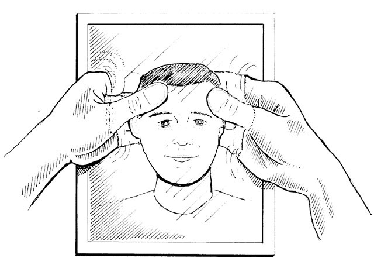
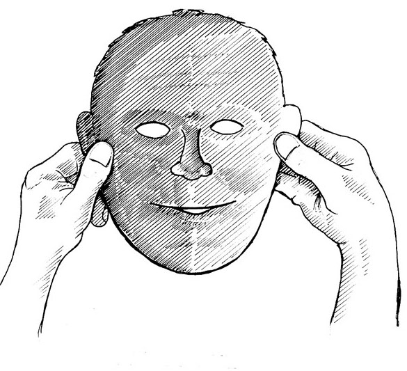
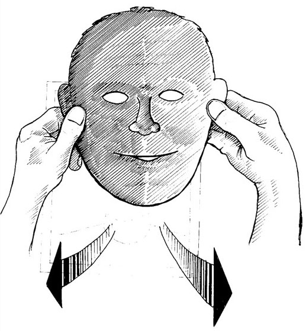

What do I normally do when I see my face in the mirror? I play tricks with it. As well as looking at it, I imagine I’m looking out of it. I’ve never seen my face on my side of the mirror, but I believe it’s here (because society says so). To maintain this belief, here are the games I play with my face in the mirror.
I pretend to reach into the mirror, grab hold of my face and pull it out.
Then I imagine flipping it inside out like a rubber mask so that it’s facing the other way.
It’s small, so with my imagination I stretch it to make it bigger. (Measure the face in the mirror between your thumb and forefinger and see how small it is.)
Now I move this imaginary, inside out, enlarged face towards the place I’m looking out of and imagine attaching it here to nothing. I pretend to put it on like a mask. As I do this I imagine changing it from being flat, hard and cool (behind the glass there) to being uneven, soft and warm here. (I marry the visible image there to the invisible sensations here.)
Then I live and act as if that face is here. Without realising it, I’m playing a game of pretence: the face game – the game of having a face here. Almost everyone plays this game – everyone except babies, some unsocialised people and seers. Without questioning it, we accept that we are what we look like, that we are here what we see in the mirror there.
Looking in the mirror honestly shows me not only what my face looks like but also where it is – it’s there in the mirror. When I’m seeing that my face is there, not here, I’m not playing tricks with it. I’m not stealing it from the mirror, not imagining it inside out and all the rest. I’m letting it be what it is, where it is.
Being faceless is a profound relief. Instead of playing the face game – instead of performing all those tiresome tricks, day in, day out – you simply are what you are. Whether or not you are in front of a mirror, you see there’s no image at your centre. There’s nothing here to think about, to keep going, to remember or worry about, nothing here that you have to be sure of or have to prove to others, nothing here that separates you from others, nothing here that will age or die. Consciously being your real Self, you are free and at peace.
At the same time you remain aware of what you look like. You are both human and divine.